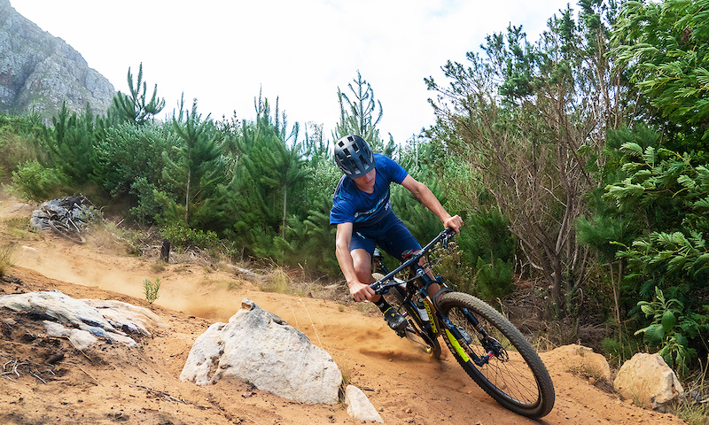
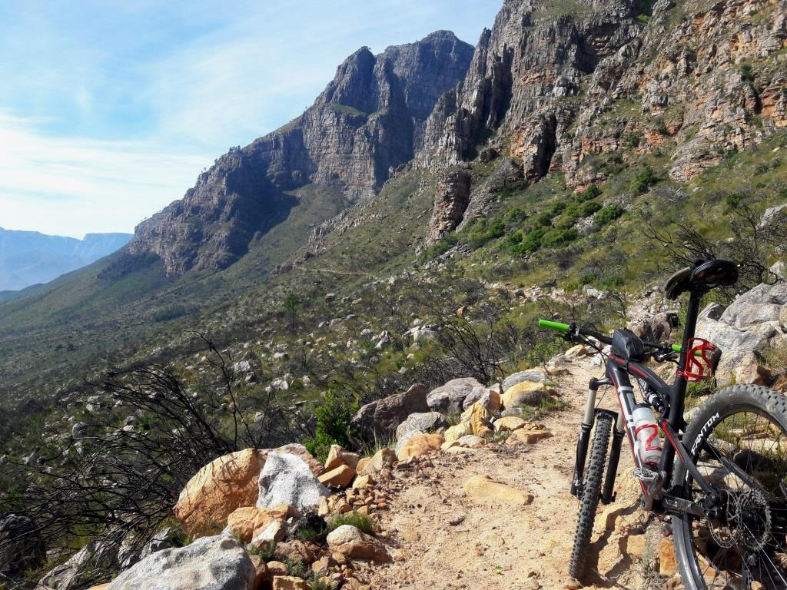
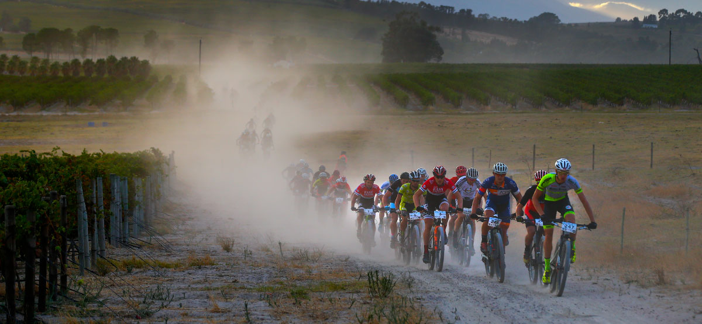

Welcome! On this page I talk about mountain biking in Cape Town
There are many places to go mountain biking in Cape Town. Below are 3 of my favourite spots:
| Tokai | Tokai is the most famous MTB spot in the southern suburbs by far. It has trails for beginner and advanced riders. |  | 👍 |
| Table Mountain | Table Mountain has some beautiful trails to ride on, with amazing views over the city bowl. |  | 👍 |
| Cape Winelands | The Cape Winelands hosts some of the most famous MTB races in the world. |  | 👍 |
Some other places to ride in and around Cape Town include:
- Meerendal
- Boshendal Trails
- Bloemendal
- Paarl Trails
- Stellenbosch Trails
- Oak Valley
- Hermanus
The fact that it takes place in South Africa, helped me make the decision. I love riding and looking at beautiful scenery at the same time.
- Alain Prost (4 time F1 champion)